과제 2 · 주간 이벤트 제작생성 페이지
이미지 갤러리 — 할로윈 주간 이벤트
키아트와 언어별 배너입니다. 썸네일을 누르면 긴 변 1600px JPEG가 열립니다. 원본 PNG는 사이트 용량 때문에 넣지 않았고, 저장소의 deliverables/task2-weekly-event/2026-w44-halloween/ 에 있습니다.
다국어 문구 표 스토어 등록 시트 키아트 프롬프트
스토어 제출용 키아트(글자 없음)
keyart_16x9_1920x1080원본 1920×1080, 2.6MB · keyart_16x9_1920x1080.pngkeyart_1x1_1080x1080원본 1080×1080, 1.9MB · keyart_1x1_1080x1080.png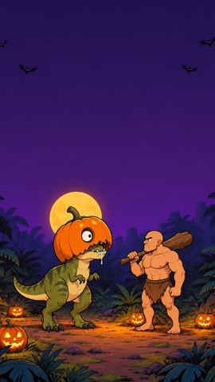
keyart_9x16_1080x1920원본 1080×1920, 2.0MB · keyart_9x16_1080x1920.png
언어별 배너 39장
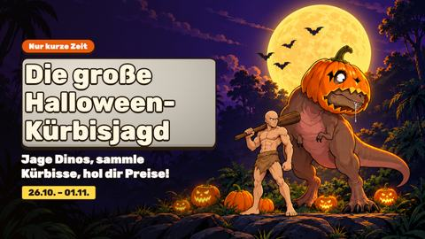
독일어 · 가로 16:9원본 1920×1080, 2.2MB · banner_de_landscape.png독일어 · 세로 9:16원본 1080×1920, 1.8MB · banner_de_portrait.png독일어 · 정사각 1:1원본 1080×1080, 1.4MB · banner_de_square.png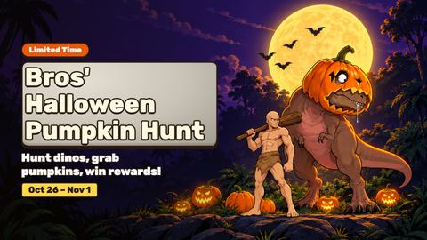
영어 · 가로 16:9원본 1920×1080, 2.2MB · banner_en_landscape.png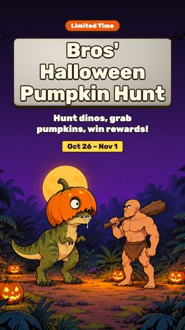
영어 · 세로 9:16원본 1080×1920, 1.8MB · banner_en_portrait.png영어 · 정사각 1:1원본 1080×1080, 1.5MB · banner_en_square.png스페인어 · 가로 16:9원본 1920×1080, 2.2MB · banner_es_landscape.png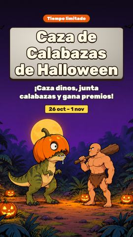
스페인어 · 세로 9:16원본 1080×1920, 1.8MB · banner_es_portrait.png스페인어 · 정사각 1:1원본 1080×1080, 1.4MB · banner_es_square.png프랑스어 · 가로 16:9원본 1920×1080, 2.2MB · banner_fr_landscape.png프랑스어 · 세로 9:16원본 1080×1920, 1.8MB · banner_fr_portrait.png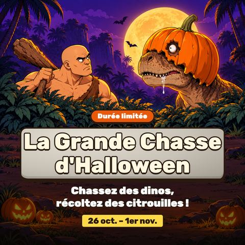
프랑스어 · 정사각 1:1원본 1080×1080, 1.5MB · banner_fr_square.png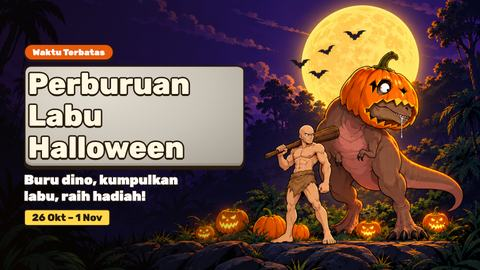
인도네시아어 · 가로 16:9원본 1920×1080, 2.2MB · banner_id_landscape.png인도네시아어 · 세로 9:16원본 1080×1920, 1.8MB · banner_id_portrait.png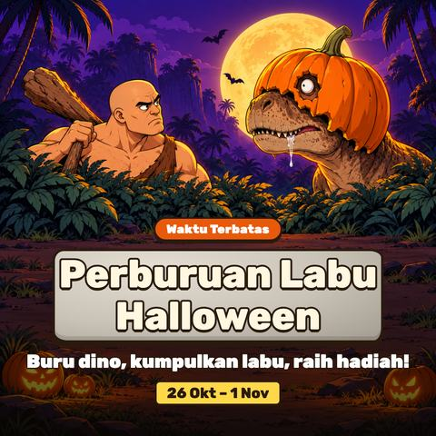
인도네시아어 · 정사각 1:1원본 1080×1080, 1.5MB · banner_id_square.png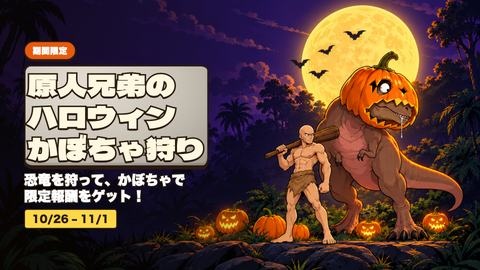
일본어 · 가로 16:9원본 1920×1080, 2.2MB · banner_ja_landscape.png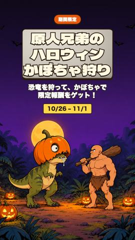
일본어 · 세로 9:16원본 1080×1920, 1.8MB · banner_ja_portrait.png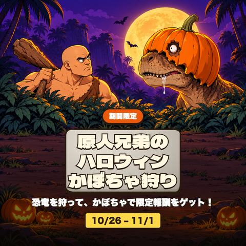
일본어 · 정사각 1:1원본 1080×1080, 1.6MB · banner_ja_square.png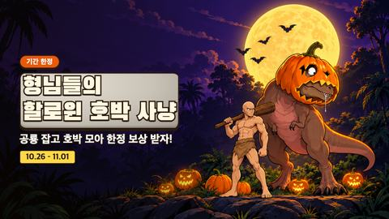
한국어 · 가로 16:9원본 1920×1080, 2.2MB · banner_ko_landscape.png한국어 · 세로 9:16원본 1080×1920, 1.8MB · banner_ko_portrait.png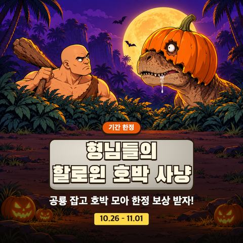
한국어 · 정사각 1:1원본 1080×1080, 1.5MB · banner_ko_square.png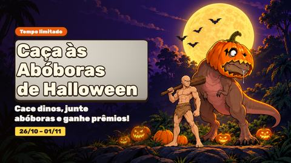
포르투갈어 · 가로 16:9원본 1920×1080, 2.2MB · banner_pt_landscape.png포르투갈어 · 세로 9:16원본 1080×1920, 1.8MB · banner_pt_portrait.png포르투갈어 · 정사각 1:1원본 1080×1080, 1.5MB · banner_pt_square.png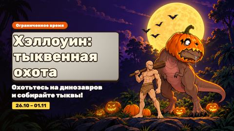
러시아어 · 가로 16:9원본 1920×1080, 2.2MB · banner_ru_landscape.png러시아어 · 세로 9:16원본 1080×1920, 1.8MB · banner_ru_portrait.png러시아어 · 정사각 1:1원본 1080×1080, 1.4MB · banner_ru_square.png태국어 · 가로 16:9원본 1920×1080, 2.3MB · banner_th_landscape.png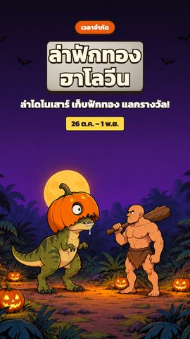
태국어 · 세로 9:16원본 1080×1920, 1.8MB · banner_th_portrait.png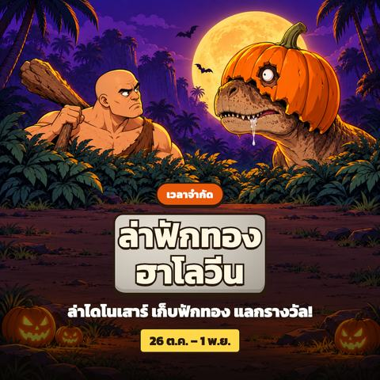
태국어 · 정사각 1:1원본 1080×1080, 1.6MB · banner_th_square.png튀르키예어 · 가로 16:9원본 1920×1080, 2.2MB · banner_tr_landscape.png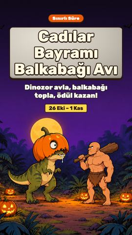
튀르키예어 · 세로 9:16원본 1080×1920, 1.8MB · banner_tr_portrait.png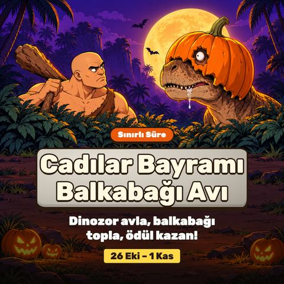
튀르키예어 · 정사각 1:1원본 1080×1080, 1.5MB · banner_tr_square.png베트남어 · 가로 16:9원본 1920×1080, 2.3MB · banner_vi_landscape.png베트남어 · 세로 9:16원본 1080×1920, 1.8MB · banner_vi_portrait.png베트남어 · 정사각 1:1원본 1080×1080, 1.6MB · banner_vi_square.png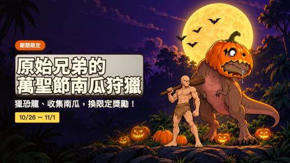
중국어(번체) · 가로 16:9원본 1920×1080, 2.3MB · banner_zh-TW_landscape.png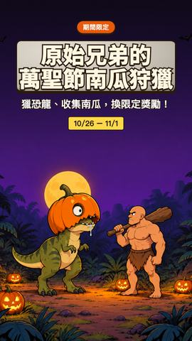
중국어(번체) · 세로 9:16원본 1080×1920, 1.8MB · banner_zh-TW_portrait.png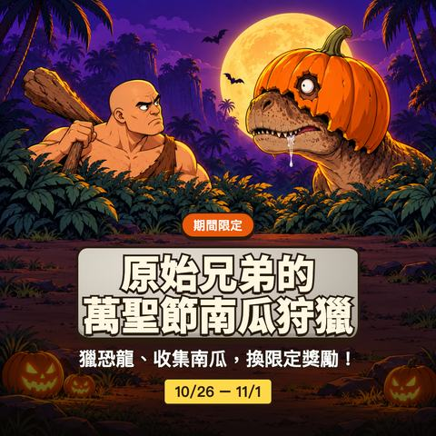
중국어(번체) · 정사각 1:1원본 1080×1080, 1.5MB · banner_zh-TW_square.png키아트 생성본
시도본(v1)
디자이너 검수에서 다시 만든 첫 시도입니다.
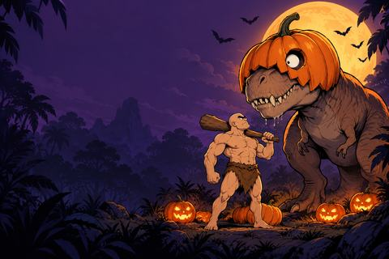
v1_keyart_16x9원본 1536×1024, 2.1MB · v1_keyart_16x9.png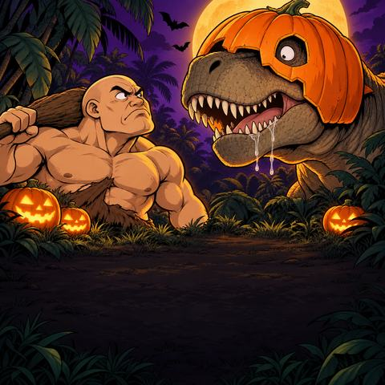
v1_keyart_1x1원본 1254×1254, 2.9MB · v1_keyart_1x1.png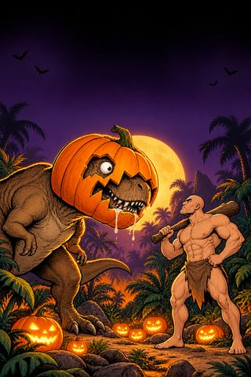
v1_keyart_9x16원본 1024×1536, 2.8MB · v1_keyart_9x16.png